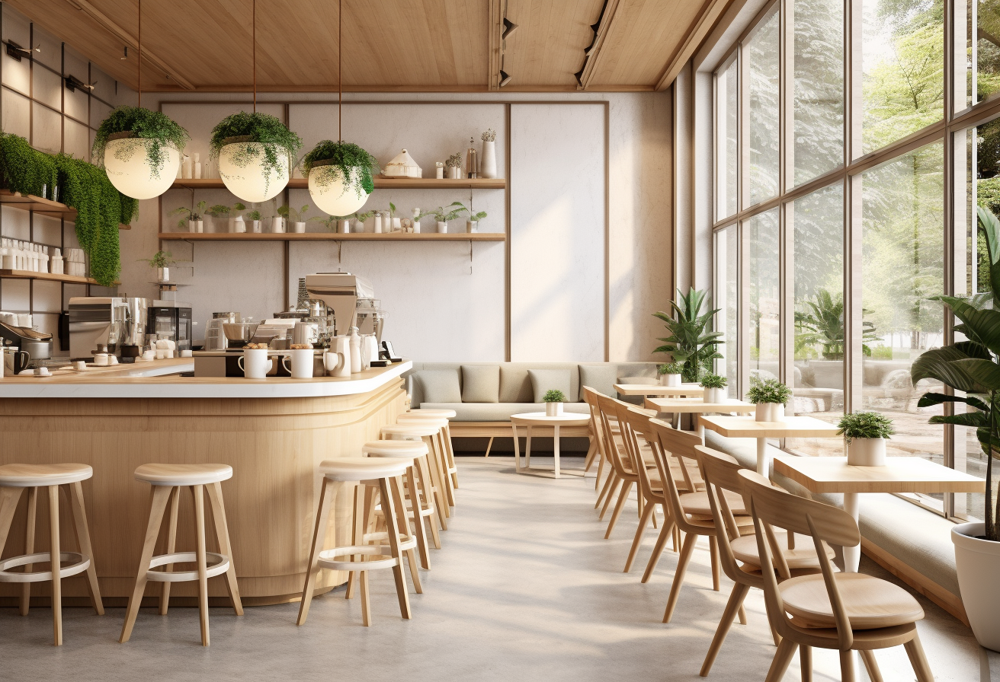

Temukan KopiKita
Lokasi demonstrasi KopiKita
Informasi Kedai
Alamat: Jl. Siliwangi No.50, Kahuripan, Kec. Tawang, Kota Tasikmalaya, Jawa Barat
Jam Operasional:
Senin–Jumat: 08.00–22.00
Sabtu–Minggu:
09.00–23.00
Fasilitas: Wi-Fi gratis, colokan listrik, AC, area outdoor, mushola.
